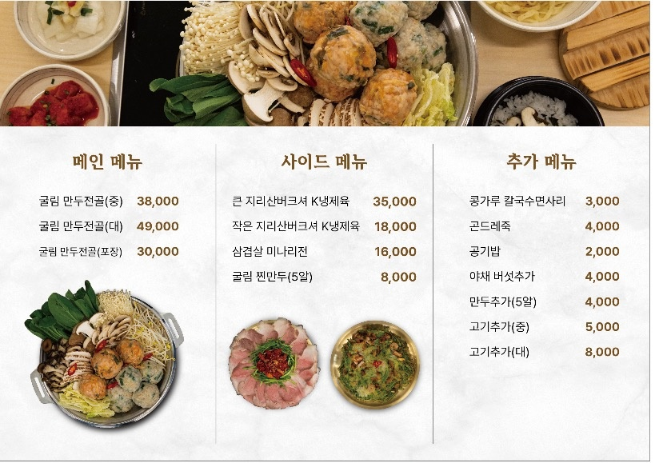
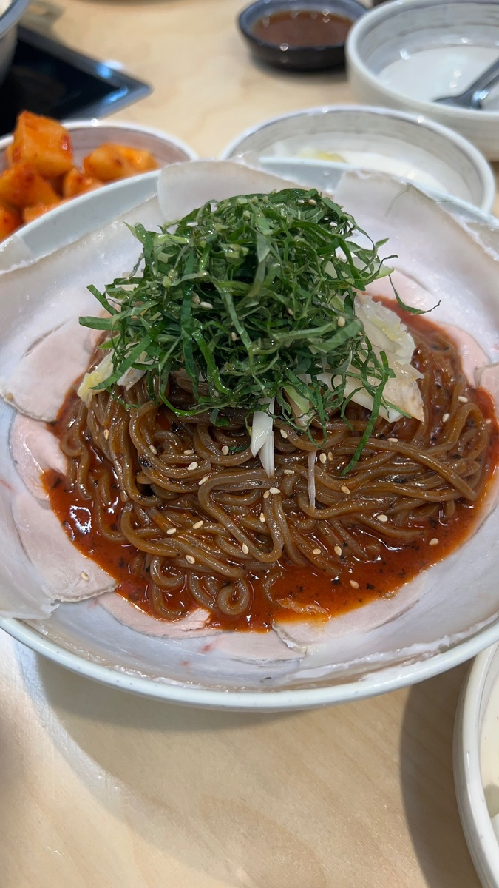

안녕하세요! 오늘은 2TV 생생정보 '장사의 신' 코너에서 소개된 서울 송파구 방이동의 숨은 맛집 방이굴림만두떼굴을 소개해드리려고 합니다.
올림픽공원 바로 옆, 방이동에 위치한 이 맛집의 시그니처 메뉴는 바로 "밀가루 없는 수제 굴림 만두전골"입니다! 🥟
| 메뉴 | 특징 |
|---|---|
| 🥇 굴림만두전골 | 밀가루 없는 수제 굴림 만두 + 진한 육수 + 신선한 채소, 시그니처 메뉴 |
| 🍚 곤드레죽 | 전골 후 마무리로 즐기는 고소한 곤드레죽 |

"육수도 진하고 채소도 신선해요. 밀가루 없는 만두라 속이 편하고 건강한 느낌!"
🚇 지하철: 방이역 또는 올림픽공원역 하차 후 도보
🚌 버스: 올림픽공원 방면 버스 이용
🅿️ 주차: 인근 공영주차장 이용
📍 서울특별시 송파구 양재대로71길 4-27 (방이동) | ☎ 02-415-5999
※ 본 포스팅은 KBS 2TV 생생정보 방송 내용을 기반으로 작성되었습니다. 방문 전 영업시간과 메뉴를 확인해주세요.